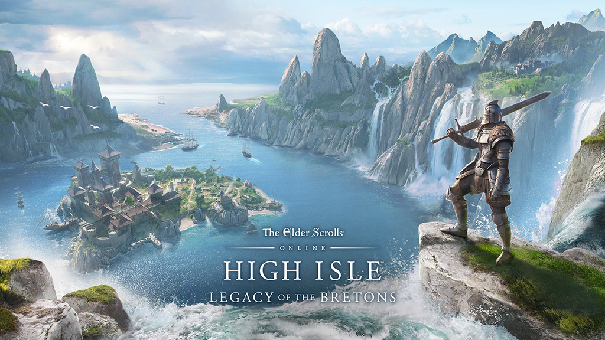

Her yıl düzenli gelen hikaye ve ek paketleriyle yılların eskitemediği, çok eleştirilen ama piyasadaki belki de en iyi MMORPG’lerden olan Elder Scrolls Online’ın 2022 yılında yapacağı güncellemelerin tanıtımı yapıldı. Yıl içinde 4 farklı paketle gelecek güncellemeler ile oyuna 4 yeni dungeon daha eklenmiş olacak.

Oyuna eklenecek en önemli özellik kuşkusuz Tales of Tribute adı verilen kart oyunu. Oyun içinde keşif ve quest’ler yoluyla bulunarak tamamlanacak kart destesiyle NPC’lerle veya gerçek kişiler ile oynamak mümkün olabilecek. Kart oyununu diğer benzerlerinden ayıran en güzel özellik ise iki rakibin desteleri birleştirip karıştırıldıktan sonra o deste ile oynanacak olması. Yani destesi iyi olan kazanacak diye bir durum yok.
Elder Scrolls Online’ı yıllar içinde ara vererek oynuyor olsam da, oyun kendini tekrar etmeye başlamış olsa da Elder Scrolls Online ekibinin belirli bir disiplin içinde yılda 4 ek paket üretiyor olması takdiri hak ediyor bence. Aylık ücretinin olmaması ile diğer pek çok MMORPG’den ayrılmasının yanında ESO Plus ücreti ile de en düşük harcamayı yaparak oynanabilen MMORPG’lerden biri.